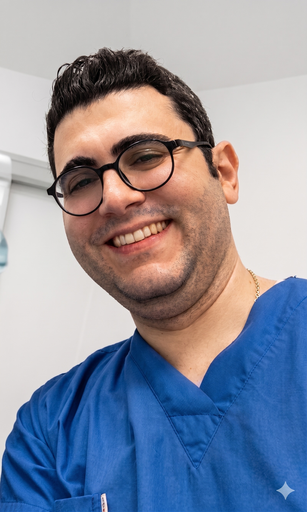
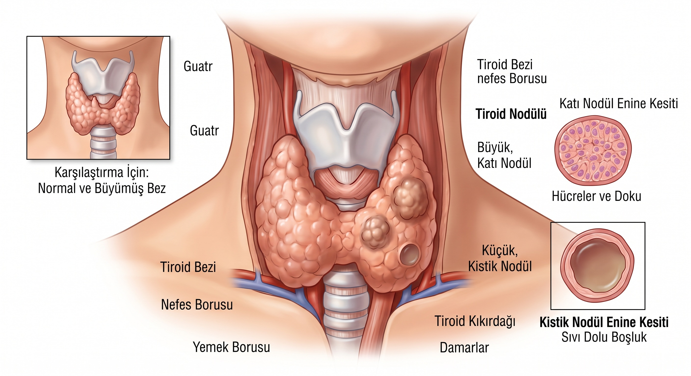
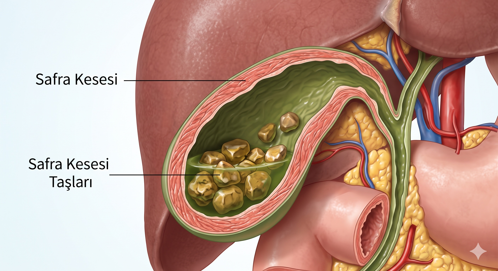
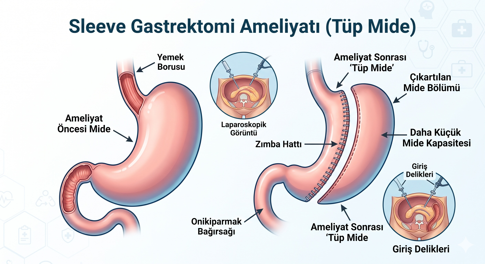
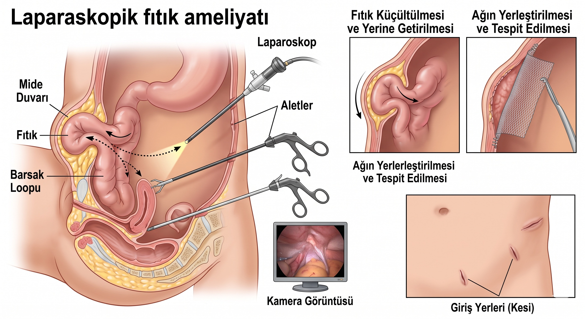
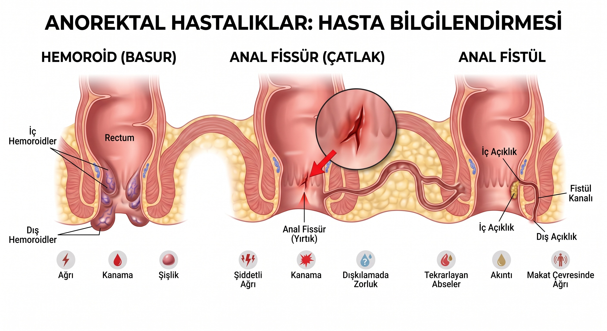
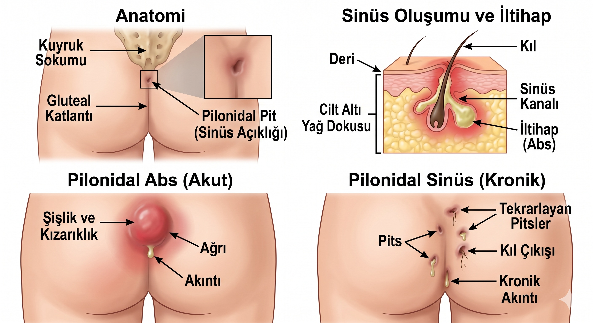

Genel Cerrahi Uzmanı · FTBS
Hatay Eğitim ve Araştırma Hastanesi
Genel Cerrahi Kliniği

1989 yılında Antakya'da doğdu. Ege Üniversitesi Tıp Fakültesi'nden mezun olduktan sonra Hatay Mustafa Kemal Üniversitesi'nde Genel Cerrahi uzmanlık eğitimini tamamladı. Türk Cerrahi Derneği Yeterlilik Sertifikası (FTBS) sahibidir.
Cerrahi, yalnızca başarılı bir ameliyat yapmak değildir. Her hastanın farklı bir yaşam öyküsü, beklentileri ve kaygıları olduğuna inanır. Bu nedenle tedavi sürecinde hastalarını dikkatle dinlemeyi, endişelerini anlamayı ve tüm kararları açık iletişim ile karşılıklı güven içinde birlikte almayı önemser.
Ameliyat kararının, bir insanın yaşamında vereceği en önemli sağlık kararlarından biri olduğunu düşünmektedir. Bu nedenle hastalığın nedenini, ameliyatın gerçekten gerekli olup olmadığını, varsa alternatif tedavi seçeneklerini, ameliyatın olası risklerini, komplikasyonlarını ve iyileşme sürecini hastalarıyla ayrıntılı olarak değerlendirir. Tüm bu bilgileri tıbbi terimlerden uzak, herkesin anlayabileceği sade bir dille paylaşmayı benimser. Amacı, hastalarının yalnızca tedavi edilmesi değil; tedavi sürecinin her aşamasını anlayarak kendilerini güvende hissetmeleridir.
Tiroid-paratiroid cerrahisi, laparoskopik safra kesesi cerrahisi, tüp mide (sleeve gastrektomi), karın duvarı fıtıkları, anal bölge hastalıkları ve genel cerrahinin birçok alanında güncel bilimsel yaklaşımlar doğrultusunda hizmet vermektedir.
Klinik çalışmalarının yanı sıra akademik üretime de önem vermektedir. Ulusal ve uluslararası bilimsel yayınlar, kitap bölümleri, sözlü bildiriler ve patent başvuruları ile genel cerrahi alanındaki bilimsel gelişmelere katkı sağlamayı sürdürmektedir.
Hatay Selim Nevzat Şahin Anadolu Lisesi
Ege Üniversitesi Tıp Fakültesi
Ege Üniversitesi Tıp Fakültesi
Proje: Çölyak Hastalarında Primer Laktaz Eksikliği Sıklığı
Hatay MKÜ Tayfur Ata Sökmen Tıp Fakültesi
Tez: Karaciğer Parankim Kanaması Modeli Oluşturulan Ratlarda Inula viscosa ve Capsella bursa-pastoris Bitki Ekstrakt Karışımının Hemostatik Etkisi
Anadolu Üniversitesi
Hatay Eğitim ve Araştırma Hastanesi — Genel Cerrahi Kliniği
Acıbadem Mehmet Ali Aydınlar Üniversitesi Atakent Hastanesi — Kolorektal ve İleri Minimal İnvaziv Cerrahi Kliniği
(Deprem nedeniyle ayrılış)
Kilis Devlet Hastanesi
Kilis 7 Aralık Üniversitesi — Cerrahi Hemşireliği Dersi
Altınözü Toplum Sağlığı Merkezi
Türk Cerrahi Derneği Yeterlilik Sertifikası
Hatay Mustafa Kemal Üniversitesi
Işıklı ve Aspiratörlü Ameliyat Eldiveni
Türk Patent Enstitüsü · 08.02.2022
Dosya No: 2022/001618

Tiroid bezinde oluşan nodüller, guatr ve tiroid kanseri gibi hastalıkların cerrahi tedavisi yapılmaktadır. Ameliyat sırasında ses tellerini hareket ettiren sinirlerin korunmasına yardımcı olan sinir monitörizasyon sistemi (sinir monitörü) rutin olarak kullanılmaktadır. Bu sayede ameliyat daha güvenli bir şekilde gerçekleştirilmektedir.

Safra kesesi taşları, iltihabı ve diğer safra kesesi hastalıklarının cerrahi tedavisi yapılmaktadır. Ameliyatlar çoğunlukla kapalı (laparoskopik) yöntemle gerçekleştirilerek hastaların daha az ağrı duyması ve daha hızlı iyileşmesi hedeflenmektedir.

Tüp mide ameliyatı, obezite ve obeziteye bağlı hastalıkların tedavisinde uygulanan etkili bir yöntemdir. Hastalarımız ameliyat öncesi ve sonrasında ayrıntılı olarak takip edilmekte ve beslenme süreci planlanmaktadır. Uygun kriterleri karşılayan hastalar için kamu hastanesinde bu ameliyat için herhangi bir ek ücret alınmamaktadır.

Kasık, göbek ve karın duvarı fıtıklarının tedavisi modern cerrahi yöntemlerle yapılmaktadır. Hastanın durumuna göre ameliyat kapalı (laparoskopik) veya açık yöntemle gerçekleştirilebilir. Amaç, hastanın en kısa sürede günlük yaşamına güvenle dönebilmesidir.

Makatta çatlak (fissür), fistül ve hemoroid gibi yaşam kalitesini olumsuz etkileyen hastalıkların tanı ve tedavisi güncel cerrahi yöntemlerle yapılmaktadır. Tedavi, hastalığın evresine göre kişiye özel planlanır ve mümkün olan en konforlu iyileşme süreci hedeflenir.

Kıl dönmesi hastalığında hem cerrahi hem de uygun hastalarda fenol tedavisi uygulanabilmektedir. Fenol yöntemi, seçilmiş hastalarda kesi gerektirmeden uygulanabilen, günlük yaşama hızlı dönüş sağlayan etkili bir tedavi seçeneğidir. Tedavi yöntemi, hastalığın yaygınlığına göre belirlenmektedir.
Deneyimlerinizi öğrenmek, hizmet kalitemizi artırmamıza büyük katkı sağlamaktadır. Birkaç dakikanızı ayırarak anketi doldurmanızı rica ederim.
Anketi Doldur* Tüm yanıtlar gizli tutulmakta, kimlik bilgisi istenmemektedir.
Hatay Eğitim Araştırma Hastanesi
Genel Cerrahi 4. Polikliniği
| Pazartesi | Endoskopi Birimi |
| Salı | Genel Cerrahi Polikliniği 4 |
| Çarşamba | Genel Cerrahi Polikliniği 4 |
| Perşembe | Ameliyathane |
| Cuma | Genel Cerrahi Polikliniği 4 |